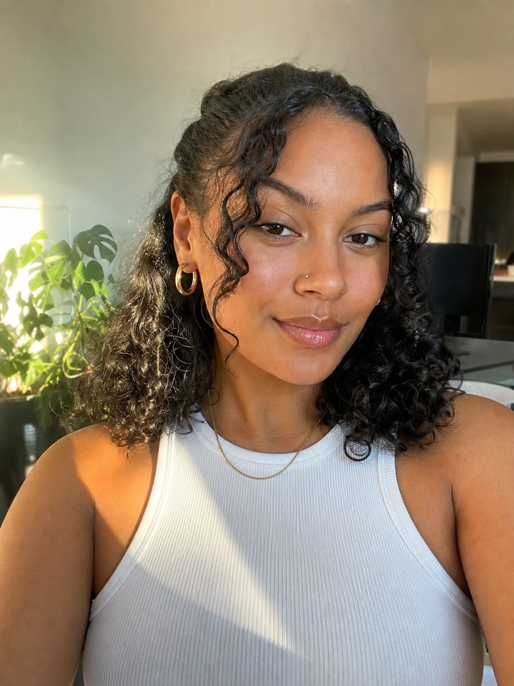

You attach a picture the same way as today. It opens and is read; the things in it get named dots. Tap what you want. Say nothing and the whole look of what you tapped applies; type, and your words decide what is taken. Nothing else is new, and a tap costs nothing.
1 · Just attached

No list of guesses while it reads — just what is happening. Words keep working the whole time.
2 · What it found
The dots are read from this picture — whatever it holds, not a fixed menu. The face never gets a dot.
3 · Two things chosen
His own example: tap hair and earrings, say nothing — both apply whole. Type “use the hair color only” and the words narrow it.